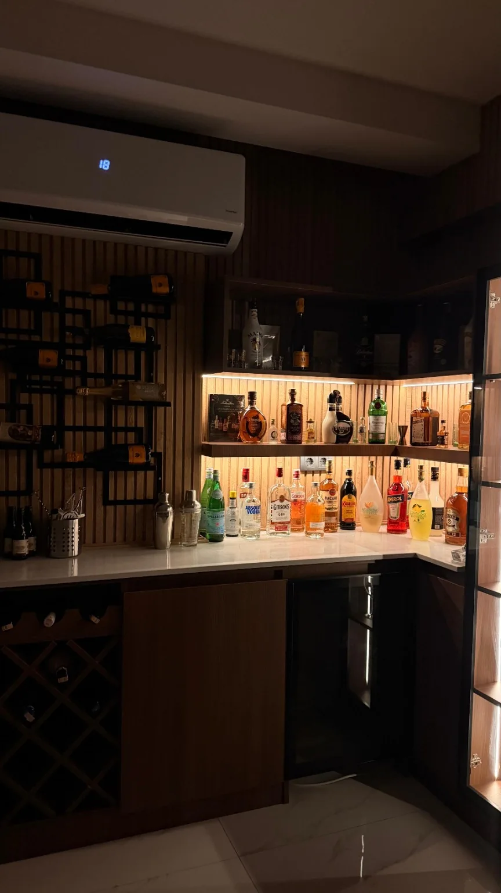

BİZİM RAF · BİZİM HİKÂYE
Ahşap, amber ışık
ve iyi bir şişe.
Bu menü, evdeki gerçek barımızdan ilham alıyor. Fotoğraflarda net seçilebilen şişeleri baz alıp tarifleri onların çevresinde kurduk; yeni favoriler geldikçe bu defter de büyüyecek.
Chivas Regal 12Monkey ShoulderJohnnie Walker RedAbsolutHendrick’s GinBacardiAperolJägermeisterGrande AbsenteMartini vermut